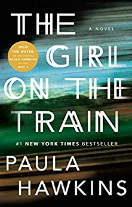

The Girl on the Train
By: Paula Hawkins
 She is one of those tiny bird-women, a beauty, pale-skinned with
blond hair cropped short." Rachel, the main narrator of Paula Hawkins' novel The Girl on the Train, is
obsessed with the pair; they represent to her the perfect relationship that she once had, or seemed to, before it imploded
spectacularly.